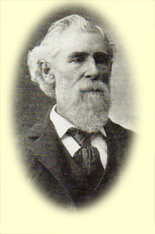

Biography

Born on a plantation near Nashville, Tennessee, on June 20, 1823, Thomas Claiborne, Jr. was the son of Thomas and Sarah Martin (Lewis) Claiborne. His father worked as a lawyer and served as a Democratic-Republican in Tennessee politics, as well as one term in the U.S. Congress. At the age of twenty Claiborne was admitted to the bar in Nashville, but moved to Trenton, Tennessee, to edit the newspaper True American. In 1845 he went to Washington, D.C. where he was appointed a clerkship in the Treasury Department. The next year President Polk appointed Claiborne to Second Lieutenant (he soon rose to First Lieutenant) of the Mounted Rifles for service in the Mexican-American War, and thus began his long military career.
After the Mexican-American War, Claiborne served in the frontier service from 1849-61. He rose to Brevet Captain, and in 1853 President Franklin Pierce and Secretary of War Jefferson Davis appointed him Captain in the Regiment of Mounted Riflemen. During his period of service in Oregon, Claiborne married his cousin and neighbor Annie Maxwell in August of 1851. The couple had two daughters. Their first daughter Mary Claiborne died at an early age, but Mollie Maxwell Claiborne lived to be eighty-five and cared for her father’s papers after his death. After serving in Oregon between 1849 and 1856, Claiborne served in several Indian campaigns in New Mexico from 1856-61. In 1861 he resigned from the United States Army and enlisted in the Confederate Army at the start of the Civil War, during which time he again rose from Captain to Colonel. After the war he returned to Nashville, where he farmed and briefly served as Marshall for the Middle District of Tennessee. He died in 1911.